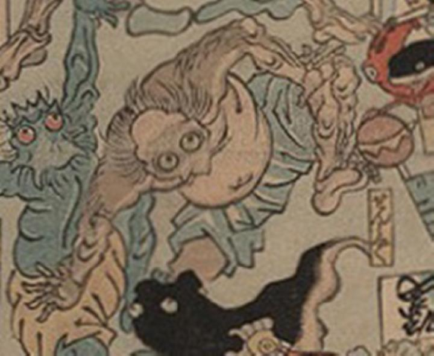

病気；ビョウキ，疫神；エキシン，疝癪；センシャク

疝癪が擬人化した化物。巨躯で上半身は裸、頭頂部から背中にかけて体毛で覆われている。
著作者：歌川芳虎／出典：親書誌：U426_nichibunken_0012：諸病諸薬の戦い；ショビョウショヤクノタタカイ／日付：2006／資源識別子：U426_nichibunken_0012_0016_0000
Copyright (c)2010- International Research Center for Japanese Studies, Kyoto, Japan. All rights reserved.